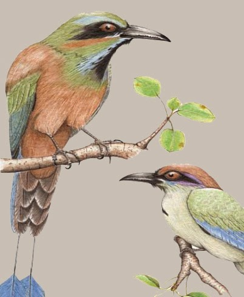

Entre la frondosa vegetación podemos encontrar su plumaje tornasolado, con una mancha triangular en el pecho rodeada de turquesa, y de igual color sobre los ojos, cabeza de plumas verdes y vientre canela.
El calendario maya predestina funciones y el Toh simboliza un cambio de estado, una maduración de la energía, una evolución de un estadio a otro, un viaje de no retorno hacia aquello que el destino nos tiene reservado desde que nacemos.
| Aspecto | Aplica (✔️/❌) |
|---|---|
| 1) Es endémico | ❌ |
| 2) Es símbolo importante en la cultura maya | ✅ |
| 3) Su alimentación es insectívora | ✅ |
| 4) Está en alguna categoría de riesgo de extinción | ❌ |
El Pájaro Toh solo habita en la Península de Yucatán.
Su cola en forma de péndulo es una de sus características más notables.
Es carroñero.
Su canto es único y lo usa para delimitar su territorio.
Se alimenta de peces pequeños en los cenotes.
Es considerado un guardián de los cenotes en la cultura maya.
Prefiere zonas selváticas y húmedas para vivir.
También se encuentra en el norte de México.